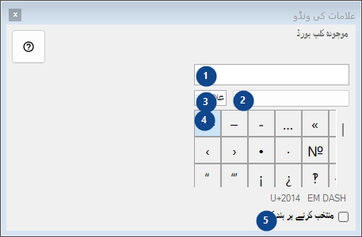
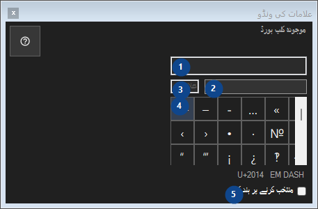

علامات کی ونڈو
مقصد
نایاب علامات کا پیلیٹ: کلک کرنے سے علامت کلپ بورڈ پر کاپی ہو جاتی ہے؛ سب کچھ اسی کمپیوٹر پر رہتا ہے۔


استعمال کی ترتیب
نمبر وار وضاحتیں پڑھیں، مطلوبہ اقدار منتخب کریں اور ونڈو کے حکم سے آگے بڑھیں۔
عناصر
1. موجودہ کلپ بورڈ
موجودہ کلپ بورڈ
آپ کے شارٹ کٹ2. علامات کا سیٹ
علامات کا سیٹ
آپ کے شارٹ کٹ3. علامات تلاش کریں
نام، مطلوبہ الفاظ یا Unicode کوڈ سے تلاش کریں
آپ کے شارٹ کٹ4. علامات کا گرڈ
U+2014 EM DASH
آپ کے شارٹ کٹ5. منتخب کرنے پر بند کریں
منتخب کرنے پر بند کریں
آپ کے شارٹ کٹ